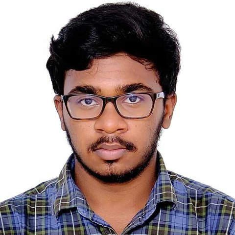

Digital VLSI designer · RTL to GDSII
ECE undergraduate at VIT working on approximate computing, processor design and hardware security. Currently taking an 8-bit processor through the full ASIC flow and building a RISC-V post-quantum cryptography accelerator.

I'm a B.Tech student in Electronics and Communication Engineering at Vellore Institute of Technology, focused on digital IC design. My work centers on arithmetic circuits that trade a little accuracy for large savings in power and area, and on taking designs from Verilog all the way to layout.
I'm looking for digital IC design and verification roles and internships where I can work on RTL, synthesis and physical design.
module krishna ( input wire clk, output reg [7:0] focus ); // RTL → synthesis → P&R → GDSII always @(posedge clk) focus <= "approx_arith"; endmodule
Worked under Dr. M. Bhaskar, HoD of ECE, on Digital VLSI. Built an FPGA-based approximate Sobel edge detector and evaluated image quality using PSNR.
Class X: 94.6%. Class XII: 95.6%.